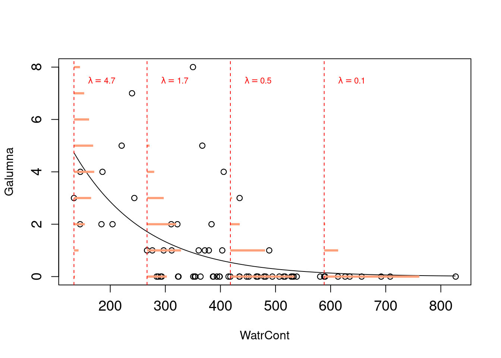

Chapitre 5 GLM avec une distribution binomiale (Bernouilli)
Les variables binaires sont fréquentes en écologie : on observe un phénomène X ou son «absence». Par exemple, on note souvent la présence ou l’absence d’espèces lors d’études de terrain. Le but est généralement de déterminer si la présence d’une espèce est influencée par différentes variables environnementales. D’autres exemples courants sont la présence/absence d’une maladie au sein d’une population sauvage, l’observation/non-observation d’un comportement spécifique et la survie/mort d’un individu. Un modèle de régression qui utilise une variable binaire comme variable réponse est l’un de plusieurs modèles linéaires généralisés (GLM) et est appelé régression logistique ou modèle logit.
Dans R, la présence (ou succès, survie…) est habituellement codée par
un 1 et une absence (ou échec, mort…) par un 0. On effectue une
régression logistique (ou n’importe quel GLM) à l’aide de la fonction
glm(). Cette fonction diffère un peu de la fonction de base lm(),
car elle permet de spécifier une distribution statistique autre que la
distribution normale. Nous avons déjà vu que les variables binaires ne
sont pas distribuées normalement (i.e. on observe un pic à 0 et un pic
à 1 et rien entre les deux). La dernière section a montré que la
distribution de Bernoulli est appropriée pour modéliser les variables
réponses binaires. La moyenne de cette distribution est représentée par
la probabilité p d’observer un résultat et la variance est calculée
par p*(1 - p). Le terme (1 - p) représente la probabilité de ne
pas observer un résultat. Dans R, on spécifie la distribution
statistique du modèle avec l’argument family. Pour la régression
logistique, on l’indique de la façon suivante : family = 'binomial’.
Rappelez-vous que la distribution de Bernoulli est un cas spécifique de
la distribution binomiale lorsque le nombre de répétitions est égal à 1:
R «comprend» qu’il faut utiliser une distribution de Bernoulli.
Lorsqu’on prédit la probabilité d’observer un phénomène Y qui est une variable binaire, la valeur prédite doit se trouver entre 0 et 1 : c’est l’étendue possible d’une probabilité ! Si on utilise un modèle linéaire de base pour modéliser une variable binaire en fonction de variables explicatives, il est fort possible qu’on obtienne des valeurs prédites qui se retrouvent en dehors de l’intervalle [0,1], ce qui ne fait aucun sens. L’exemple suivant va vous permettre de mieux comprendre pourquoi un modèle linéaire traditionnel est inapproprié. La prochaine sous-section va vous montrer comment éviter ce problème avec une fonction de lien. Brièvement, une fonction de lien est utilisée pour linéariser la relation entre les valeurs prédites d’un modèle et le prédicteur linéaire (voir sous-section suivante).
## 1 2 3 4 5 6
## 0.66647889 0.53692818 0.63347146 0.65064083 0.88992555 0.72554642
## 7 8 9 10 11 12
## 0.62243838 0.44918156 0.38197312 0.86452345 0.65216882 0.58115232
## 13 14 15 16 17 18
## 0.82937368 0.49091140 0.32085505 0.70975427 0.74788803 0.77927339
## 19 20 21 22 23 24
## 0.27006616 0.97936848 0.92066821 0.91783725 0.59213949 0.75609015
## 25 26 27 28 29 30
## 0.40830867 0.45469271 0.97998058 0.65973050 0.70784146 0.24024164
## 31 32 33 34 35 36
## 0.44598561 0.42241754 0.26475620 0.29565189 0.41782680 0.21776232
## 37 38 39 40 41 42
## 0.25508504 0.04877715 -0.20118869 0.24807651 0.14103573 0.26617933
## 43 44 45 46 47 48
## -0.03165263 -0.22623884 0.03336756 0.16659086 0.36168204 0.08179987
## 49 50 51 52 53 54
## 0.30060989 0.19286520 0.14544285 -0.04279283 0.22290395 0.04560953
## 55 56 57 58 59 60
## 0.17240580 0.04198285 -0.08121733 0.31664687 -0.14695674 0.14463181
## 61 62 63 64 65 66
## -0.10106464 -0.11390341 0.11942865 0.19182463 0.46870977 0.06957320
## 67 68 69 70
## -0.40803217 -0.04559318 0.46895461 0.41060630# La fonction «fitted()» extrait les valeurs prédites de la
# variable réponse du modèle linéaire. Certaines valeurs
# sont en-dessous de 0, ce qui ne fait pas de sens pour une
# régression logistique. Essayons le même modèle, mais avec
# une distribution binomiale cette fois-ci. Remarquez
# l'argument «family» pour spécifier la distribution.
model.glm <- glm(pa ~ WatrCont + Topo, data = mites, family = binomial)
fitted(model.glm)## 1 2 3 4 5 6
## 0.7346594257 0.4206031345 0.6631394056 0.7015590344 0.9653549812 0.8359993456
## 7 8 9 10 11 12
## 0.6372174958 0.5611742138 0.3897035615 0.9554194818 0.9124133201 0.5341181089
## 13 14 15 16 17 18
## 0.9371232991 0.6630994614 0.2534848511 0.8123833970 0.8652527310 0.8987976705
## 19 20 21 22 23 24
## 0.1672936363 0.9859583431 0.9745439489 0.9738080708 0.5622303983 0.8748321042
## 25 26 27 28 29 30
## 0.4560079466 0.2368433083 0.9860456411 0.7208455080 0.8093521595 0.1286310583
## 31 32 33 34 35 36
## 0.2209673461 0.4923424344 0.1597888373 0.2074205123 0.4804923276 0.1047615219
## 37 38 39 40 41 42
## 0.1468234813 0.0200046339 0.0015397957 0.1379815251 0.0502950337 0.1617730592
## 43 44 45 46 47 48
## 0.0088128566 0.0011890438 0.0171102995 0.0645145152 0.3411366744 0.0279131027
## 49 50 51 52 53 54
## 0.2159692960 0.0829690298 0.0525153673 0.0078621097 0.1098500760 0.0193729227
## 55 56 57 58 59 60
## 0.0682372458 0.0186736500 0.0052993359 0.2453448032 0.0026936317 0.0520999273
## 61 62 63 64 65 66
## 0.0043209522 0.0037861341 0.0406398167 0.0821545812 0.2640115440 0.0246819529
## 67 68 69 70
## 0.0001818862 0.0076395774 0.2645034420 0.16443067465.1 La fonction de lien
Afin d’éviter les biais reliés aux modèles linéaires de base, nous avons besoin de spécifier deux choses : une distribution statistique pour les résidus du modèle et une fonction de lien pour les valeurs prédites par ce même modèle. Nous avons déjà vu la distribution de Bernoulli dans la section précédente, alors nous passerons directement à l’explication du rôle de la fonction de lien.
Pour un modèle de régression linéaire d’une variable réponse continue distribuée normalement, l’équation suivante nous permet d’obtenir les valeurs prédites de la variable réponse :
μ = Xβ
où μ est la valeur prédite de la réponse variable, X est la matrice du modèle (i.e. ça représente les variables explicatives) et β correspond aux paramètres estimés à partir des données (i.e. l’intercept et la pente). Le terme Xβ est appelé le prédicteur linéaire. En termes mathématiques, c’est le produit matriciel de la matrice du modèle X et du vecteur des paramètres estimés β. Regardons cela de plus près dans R :
## Plant Type Treatment conc uptake
## 1 Qn1 Quebec nonchilled 95 16.0
## 2 Qn1 Quebec nonchilled 175 30.4
## 3 Qn1 Quebec nonchilled 250 34.8
## 4 Qn1 Quebec nonchilled 350 37.2
## 5 Qn1 Quebec nonchilled 500 35.3
## 6 Qn1 Quebec nonchilled 675 39.2# Construisez un modèle linéaire de l'absorption de CO2 en
# fonction de la concentration ambiante de CO2.
model.CO2 <- lm(uptake ~ conc, data = CO2)
# On extraie la matrice du modèle avec la fonction
# model.matrix().
X <- model.matrix(model.CO2)
# Les paramètres estimés sont extraits ainsi :
B <- model.CO2$coefficients
# On multiple X et B pour obtenir le prédicteur linéaire. Le
# symbole «%*%» indique qu'on veut effectuer le produit
# matriciel.
XB <- X %*% B
# On compare les valeurs de XB aux valeurs obtenues avec la
# fonction fitted(). Toutes les déclarations devraient être
# vraies (i.e. TRUE). On utilise la fonction round() pour
# que tous les éléments aient cinq décimales.
round(fitted(model.CO2), digits = 5) == round(XB, digits = 5)## [,1]
## 1 TRUE
## 2 TRUE
## 3 TRUE
## 4 TRUE
## 5 TRUE
## 6 TRUE
## 7 TRUE
## 8 TRUE
## 9 TRUE
....Lorsqu’on crée un modèle linéaire simple avec une variable réponse continue distribuée normalement, le prédicteur linéaire est égal aux valeurs attendues de la variable réponse. Ceci n’est pas exact si la variable réponse n’est pas distribuée normalement. Si c’est le cas, il faut appliquer une transformation sur les valeurs prédites, i.e. une fonction de lien. La fonction de lien peut être vue comme une transformation des valeurs prédites pour obtenir une relation linéaire entre celles-ci et le prédicteur linéaire :
g(μ) = Xβ
où g(μ) est la fonction de lien des valeurs prédites. Ceci permet d’enlever la contrainte de distribution normale des résidus. Lorsque la variable réponse est une variable binaire, la fonction de lien est la fonction logit et est représentée par l’équation suivante :
logit(μ) = log (μ / 1-μ) = Xβ
où μ représente les valeurs prédites (i.e. la probabilité que Y = 1, car on observe la présence d’une espèce, d’une maladie, d’un succès ou d’un autre événement). Le ratio μ / 1-μ représente la cote (odds en anglais) qu’un événement se produise. Cela transforme les valeurs prédite sur une échelle de 0 à l’infini. Par exemple, si on a une probabilité de 0,8 d’observer une espèce X, la cote est donc de 4 : il est 4 fois plus probable d’observer l’espèce que de ne pas l’observer - 0.8/(1-0.8) = 4. La transformation log (on appelle maintenant ce ratio le log odds) permet aux valeurs d’être distribuées de moins l’infini à l’infini. Donc, la fonction de lien logit prend les valeurs prédites du modèle et les transforme en une variable continue sans borne. Les valeurs prédites peuvent ainsi être reliées à un prédicteur linéaire. C’est pour cette raison qu’on appelle ce modèle un modèle linéaire généralisé même si la relation entre la variable réponse et la variable explicative ne ressemble pas nécessairement à une «ligne droite» !
# On construit un modèle de régression de la présence/absence
# d'une espèce de mite (Galumna sp.) en fonction du contenu
# en eau du sol et de la topographie. On utilise la fonction
# glm() et on spécifie l'argument «family».
logit.reg <- glm(pa ~ WatrCont + Topo, data = mites, family = binomial(link = "logit"))
# La fonction de lien «logit» est la fonction par défaut pour
# une régression logistique, ce qui signifie qu'il n'est pas
# nécessaire de l'indiquer avec l'argument «family»:
logit.reg <- glm(pa ~ WatrCont + Topo, data = mites, family = binomial)
summary(logit.reg)##
## Call:
## glm(formula = pa ~ WatrCont + Topo, family = binomial, data = mites)
##
## Deviance Residuals:
## Min 1Q Median 3Q Max
## -2.0387 -0.5589 -0.1594 0.4112 2.0252
##
## Coefficients:
## Estimate Std. Error z value Pr(>|z|)
## (Intercept) 4.464402 1.670622 2.672 0.007533 **
## WatrCont -0.015813 0.004535 -3.487 0.000489 ***
## TopoHummock 2.090757 0.735348 2.843 0.004466 **
## ---
## Signif. codes: 0 '***' 0.001 '**' 0.01 '*' 0.05 '.' 0.1 ' ' 1
##
## (Dispersion parameter for binomial family taken to be 1)
##
## Null deviance: 91.246 on 69 degrees of freedom
## Residual deviance: 48.762 on 67 degrees of freedom
## AIC: 54.762
##
## Number of Fisher Scoring iterations: 65.1.1 Défi 1
En utilisant le jeu de données bacteria (du paquet MASS), modélisez
la présence de H. influenzae en fonction du traitement (trt) et de
la semaine de test (week). Commencez avec un modèle complet et
réduisez-le jusqu’à obtenir le modèle le plus parcimonieux possible.
## 'data.frame': 220 obs. of 6 variables:
## $ y : Factor w/ 2 levels "n","y": 2 2 2 2 2 2 1 2 2 2 ...
## $ ap : Factor w/ 2 levels "a","p": 2 2 2 2 1 1 1 1 1 1 ...
## $ hilo: Factor w/ 2 levels "hi","lo": 1 1 1 1 1 1 1 1 2 2 ...
## $ week: int 0 2 4 11 0 2 6 11 0 2 ...
## $ ID : Factor w/ 50 levels "X01","X02","X03",..: 1 1 1 1 2 2 2 2 3 3 ...
## $ trt : Factor w/ 3 levels "placebo","drug",..: 1 1 1 1 3 3 3 3 2 2 ...Solution
model.bact1 <- glm(y ~ trt * week, family = binomial("logit"),
data = bacteria)
model.bact2 <- glm(y ~ trt + week, family = binomial("logit"),
data = bacteria)
model.bact3 <- glm(y ~ week, family = binomial("logit"), data = bacteria)
anova(model.bact1, model.bact2, model.bact3, test = "LRT")## Analysis of Deviance Table
##
## Model 1: y ~ trt * week
## Model 2: y ~ trt + week
## Model 3: y ~ week
## Resid. Df Resid. Dev Df Deviance Pr(>Chi)
## 1 214 203.12
## 2 216 203.81 -2 -0.6854 0.70984
## 3 218 210.91 -2 -7.1026 0.02869 *
## ---
## Signif. codes: 0 '***' 0.001 '**' 0.01 '*' 0.05 '.' 0.1 ' ' 1En se basant sur ces résultats, on doit choisir le modèle 2 comme celui représentant le mieux le jeu de données.
5.2 Interpréter la sortie d’une régression logistique
La sortie du modèle de régression logistique indique que les deux
variables explicatives (WatrCont et Topo) sont significatives, mais
comment interprète-on les coefficients estimés? Rappelez-vous que nous
avons effectué une transformation des valeurs prédites par le modèle
(i.e. la probabilité que Y = 1), alors il faut utiliser une fonction
inverse pour pouvoir interpréter correctement les résultats. On peut
utiliser la fonction exponentielle exp pour obtenir la cote de
probabilité pour chaque variable explicative.
##
## Call: glm(formula = pa ~ WatrCont + Topo, family = binomial, data = mites)
##
## Coefficients:
## (Intercept) WatrCont TopoHummock
## 4.46440 -0.01581 2.09076
##
## Degrees of Freedom: 69 Total (i.e. Null); 67 Residual
## Null Deviance: 91.25
## Residual Deviance: 48.76 AIC: 54.76Pour obtenir les pentes, il faut utiliser la fonction exponentielle exp().
Ceci mettra les coefficients sur l’échelle des cotes. Mathématiquement,
ceci correspond à :
exp(model coefficients) = exp(log(μ / (1 - μ)) = u / (1 - μ).
C’est notre rapport de cotes !
## WatrCont
## 0.9843118Pour obtenir l’intervalle de confiance sur l’échelle des cotes :
## 2.5 % 97.5 %
## 0.9741887 0.9919435Prenez note que la cote pour une variable explicative est calculée
lorsque les autres variables sont gardées constantes. La topographie a
une cote de 8.09. Ceci signifie que la probabilité d’observer Galumna
sp. est 8.09 fois plus vraisemblable lorsque la topographie est de type
hummock plutôt que blanket.
Lorsque la cote est inférieure à 1, l’interprétation est un peu plus compliquée. Si c’est le case, il faut prendre la valeur inverse de la cote (i.e. 1 divisé par la cote) pour faciliter l’interprétation. L’interprétation revient à dire comment l’observation d’un phénomène est MOINS probable. Pour le contenu en eau du sol, la cote est de 0.984. L’inverse est 1 / 0.984 = 1.0159. Ceci signifie que l’augmentation d’une unité en contenu en eau diminue la vraisemblance d’observer la présence de Galumna sp. de 1.0159. On peut aussi l’exprimer en pourcentage en soustrayant 1 à cette valeur : (1.0159 - 1) * 100 = 1.59 %. Il est 1.59 % moins vraisemblable d’observer Galumna sp. avec une augmentation d’une unité de contenu en eau. Pour se convaincre qu’on fait la bonne interprétation, on peut représenter graphiquement les résultats de la présence de Galumna sp. en fonction du contenu en eau du sol. On voit qu’en moyenne la présence de Galumna sp. est plus élevée lorsque le contenu en eau est faible.

Lorsqu’un paramètre estimé est entre 0 et 1 sur l’échelle des cotes, la relation entre la variable réponse et la variable explicative est négative. Si la valeur est supérieure à 1, cela indique une relation positive entre les variables. Si l’intervalle de confiance inclut la valeur 1, la relation entre les variables n’est pas significative. Rappelez-vous qu’une valeur de 1 sur l’échelle des cotes signifie que la probabilité d’observer un phénomène Y est la même que celle de ne pas observer ce phénomène (i.e. quand p = 0.5, 0.5/(1-0.5) = 1).
Pour obtenir une probabilité au lieu d’une cote pour chaque variable explicative, il faut utiliser la fonction logit inverse :
logit-1 = 1/(1+1/exp(x))
où x est le paramètre à transformer de l’échelle log odds à l’échelle
de probabilité. Pour le modèle logit.reg, le paramètre estimé pour la
topographie est de 2.091 sur l’échelle log odds. Donc, la probabilité
est donnée par :
1/(1+1/exp(2.091)) = 0.89 ce qui équivaut à 1/(1+1/8.09). Rappelez-vous
que la valeur 8.09 est sur l’échelle des cotes. On a une probabilité de
0.89 d’observer Galumna sp. lorsque la topographie est de type
hummock.
Calculons cette valeur de cote sans utiliser la fonction exp():
On commence avec la valeur de cote pour la topographie du modèle logit.reg:
µ/ (1 - µ) = 8.09
On réarrange pour isoler µ :
µ = 8.09(1 - µ) = 8.09 - 8.09µ
8.09µ + µ = 8.09
µ(8.09 + 1) = 8.09
µ = 8.09 / (8.09 + 1)
µ = 1 / (1 + (1 / 8.09)) = 0.89
On obtient le même résultat sans utiliser la fonction logit inverse !
5.3 Pouvoir prédictif et validation du modèle
Une façon simple et intuitive d’estimer le pouvoir explicatif d’un GLM
est de comparer la déviance du modèle à celle d’un modèle nul. La
déviance peut être vue comme une généralisation du concept de la somme
des carrés résiduelle lorsque le modèle est estimé par maximisation de
la vraisemblance (i.e. la méthode par laquelle on estime les
paramètres d’un GLM). Ceci nous permet de calculer un pseudo-R2, une
statistique similaire au R2 dans une régression des moindres carrés
(i.e. la méthode utilisée pour estimer les paramètres d’une
régression linéaire de base). Le modèle nul correspond à un modèle sans
variable explicative. Dans R, on l’indique de la façon suivante :
null.model <- glm(Response.variable ~ 1, family = binomial). La forme
générique pour calculer un pseudo-R2 est :
Pseudo-R2 = (déviance du modèle nul – déviance résiduelle) / déviance résiduelle
où «déviance du modèle nul» est la déviance du modèle nul et «déviance résiduelle» est la déviance résiduelle du modèle d’intérêt. La différence est divisée par la déviance du modèle nul afin de contraindre le pseudo-R2 entre 0 et 1.
# Les déviances résiduelle et nulle sont déjà enregistrées
# dans un objet de type glm.
objects(logit.reg)## [1] "aic" "boundary" "call"
## [4] "coefficients" "contrasts" "control"
## [7] "converged" "data" "deviance"
## [10] "df.null" "df.residual" "effects"
## [13] "family" "fitted.values" "formula"
## [16] "iter" "linear.predictors" "method"
## [19] "model" "null.deviance" "offset"
## [22] "prior.weights" "qr" "R"
## [25] "rank" "residuals" "terms"
## [28] "weights" "xlevels" "y"## [1] 0.4655937Les variables explicatives du modèle expliquent 46.6% de la variabilité de la variable réponse.
Un pseudo-R2 de McFadden ajusté, qui pénalise pour le nombre de prédicteurs, peut être calculé comme suit:

où K correspond au nombre supplémentaire de prédicteurs par rapport au modèle nul.
La qualité d’ajustement des modèles de régression logistique peut être exprimée par des variantes de statistiques pseudo-R2, telles que les mesures de Maddala (1983) ou de Cragg et Uhler (1970).
Lorsqu’on parle de régressions logistiques, les valeurs faibles de R2 sont courantes.
La fonction R DescTools::PseudoR2() permet de calculer plusieurs pseudo-R2. En spécifiant which = all, calculez toutes les statistiques en même temps.
logit.reg <- glm(pa ~ WatrCont + Topo, data = mites, family = binomial(link = "logit"))
DescTools::PseudoR2(logit.reg, which = "all")## McFadden McFaddenAdj CoxSnell Nagelkerke AldrichNelson
## 0.4655937 0.3998373 0.4549662 0.6245898 0.3776866
## VeallZimmermann Efron McKelveyZavoina Tjur AIC
## 0.6674318 0.5024101 0.7064093 0.5114661 54.7623962
## BIC logLik logLik0 G2
## 61.5078819 -24.3811981 -45.6229593 42.4835224fit <- Rsq(object = logit.reg)
HLtest(object = fit)
# La valeur de p est de 0.9051814. Donc, on ne rejète pas
# notre modèle. L'ajustement du modèle est bon.5.3.1 Défi 2
Évaluez l’ajustement et le pouvoir prédictif du modèle model.bact2.
Comment pouvez-vous améliorer le pouvoir prédictif du modèle ?
Solution
null.d <- model.bact2$null.deviance
resid.d <- model.bact2$deviance
bact.pseudoR2 <- (null.d - resid.d)/null.d
bact.pseudoR2## [1] 0.0624257C’est très faible!
Le pouvoir prédictif pourrait être augmenté en incluant plus de variables explicatives.
5.4 Représentation graphique des résultats
Lorsque le modèle a été validé, il peut être utile de représenter les
résultats graphiquement afin de voir comment la variable est influencée
par les variables explicatives. Une façon de faire est de mettre à la
fois les valeurs observées et prédites de la variable réponse en
fonction d’une variable explicative sur un même graphique. Voici un
exemple avec le paquet ggplot2. Revoir l’atelier 3
pour plus d’informations sur ce paquet.
ggplot(mites, aes(x = WatrCont, y = pa)) + geom_point() + stat_smooth(method = "glm",
family = "binomial", se = FALSE) + xlab("Water content") +
ylab("Probabilité de présence") + ggtitle("Probabilité de présence de Galumna sp. en fonction du contenu en eau")